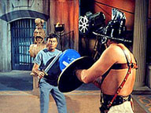
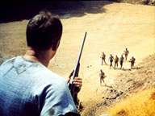
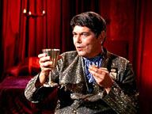
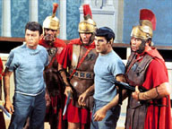
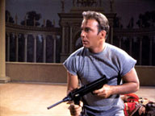
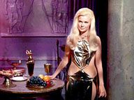

|
MANCHETE
DO EPISDIO
Teoria do Desenvolvimento Paralelo transporta a Roma
Antiga ao espao
Episdio
anterior | Prximo episdio Sinopse:
Data Estelar:
4040.7.
 Numa patrulha de rotina, a
Enterprise encontra os destroos da S.S. Beagle, uma nave de reconhecimento que
desaparecerecida seis anos antes. A Beagle era uma nave comandada pelo Capito
R.M. Merrik e possua tripulao de 47 pessoas. Merrik era um velho conhecido
de Kirk, da academia. Quando Spock projeta o caminho dos destroos durante o
tempo, descobre uma civilizao Romana moderna no planeta IV do sistema 892. A
Enterprise ento intercepta uma transmisso de televiso mostrando uma luta,
um gladiador matando o ltimo dos brbaros segundo a narrao, que na
verdade era um dos tripulantes da Beagle, William B. Harrison.
Depois de se tele-transportarem ao planeta, Kirk, Spock e McCoy so
confrontados por um grupo de escravos fugitivos. O grupo de descida capturado
e levado at o lder dos escravos, Septimus, um ex-Senador que agora um
fiel adorador do Sol. Apesar do escravo Flavius querer matar o trio da
Enterprise, Septimus os aceita como amigos e oferece a eles uma agradvel
hospitalidade. A extrema semelhana da civilizao do sistema 892 com a dos
Romanos da Terra aparentemente uma coincidncia, segundo Kirk, demonstrando
a validade da Lei de Hodgekin de Desenvolvimento Planetrio Paralelo.

Quando Kirk questiona os escravos sobre um homem chamado Merrik, ele descobre
que o lder e primeiro cidado do imprio chamado de Merricus. Quando Kirk
e seus amigos expressam o interesse de capturar Merricus, Flavius Maximus o
escravo que foi gladiador, se oferece para acompanh-los. Mas, o grupo
capturado por foras legionrias e colocados na priso. Kirk questiona
Flavius sobre a instituio da escravido no planeta e descobre que os
levantes contra o sistema praticamente cessaram aps os escravos receberem
alguns direitos como assistncia mdica e penso do estado. Kirk, Spock e
McCoy tentam fugir quando os guardas esto escoltando-os para falar com
Merricus, mas este antecipa a inteno do trio, desarmando-os e levando-os at
seus aposentos para uma conversa.
Merricus de fato Merrik, e este diz a Kirk que foi at quele planeta para
obter Iridium para fazer reparos na Beagle, que havia se danificado por causa de
um meteoro. No planeta, Merrik conheceu o Primeiro Cnsul Claudius Marcus. Ele
tambm decidiu que no poderia informar sobre a cultura do planeta para a
Federao sem contamin-la. Merrik concordou em ficar, mas acabou por
condenar morte seus tripulantes que no se adaptaram, enviando-os para a
Arena para lutar. O Cnsul ordena a Kirk que transporte a tripulao da
Enterprise para o planeta, poucos de cada vez. Em vez disso, Kirk alerta Scotty
dando condio verde como cdigo de que havia e que estava com
problemas. Por causa da falta de cooperao de Kirk, Merrik envia McCoy e
Spock para lutar na Arena contra os gladiadores Achilles e o recapturado Flavius.
Durante a luta, Spock incapacita seus oponentes, salvando a vida de McCoy. Ambos
so reenviados para a priso, enquanto Kirk entretido por Drusilla, a
escrava pessoal do Proconsul, antes de sua execuo.
Na Enterprise, Scotty se prepara para cortar a fora do planeta inteiro
enquanto Kirk est para ser executado ao vivo pela televiso Romana. Antes que
a execuo possa se concretizar, Flavius intervem e salva Kirk, mas morto
por tiros de metralhadora antes que Scotty consiga cortar a fora. Kirk ento
vai tentar libertar Spock e McCoy da priso, mas eles so cercados por
guardas, Merrik e o Proconsul.
 Merrik, que havia roubado um comunicador sinaliza para que a Enterprise os
tele-transporte; infelizmente, durante a transmisso da mensagem, Merrik
apunhalado pelo Proconsul, mas tempo dele jogar o comunicador para Kirk, que
juntamente com Spock e McCoy so transportados segundos antes da cela em que se
localizavam ser cravejada por balas das metralhadoras dos guardas. A bordo da
Enterprise, Uhura descobre que os escravos fugitivos na realidade no eram fies
adoradores do Sol, mas adoradores do cu, cu de Deus.
Comentrios:
"Mais uma vez, a Srie
Clssica opta pela falta de acurcia cientfica (quais so as chances de
haver um planeta exatamente igual Terra, mesmo levando em conta a vastido
do Universo?) para transmitir com maior fora uma metfora que relacione o
episdio com a humanidade. Sem dvida, uma das marcas do criador Gene
Roddenberry, que foi perpetuada ao longo de toda a srie original. tambm
uma escolha totalmente desnecessria e no-recomendada.
O fato de termos uma cpia da Terra ruim no s por tornar a tal
"mensagem da semana" bvia demais, mas por ser apenas uma forma fcil
de se produzir um teaser interessante para o episdio ("Outra
Terra?", Fade Out) e de elevar ensima potncia a falta de
verossimilhana da j forada "teoria do desenvolvimento paralelo dos
mundos", criada por Roddenberry para baratear a srie usando sempre essa
desculpa para apresentar aliengenas com aparncia e cultura humanas (essa
bobagem seria parcialmente redimida e legitimada com o excelente episdio "The
Chase", da sexta temporada de A Nova Gerao).
Salvador
Nogueira
Embora no seja a
maneira mais original, citar as palavras de Salvador Nogueira sobre
Miri sem duvida a mais eficiente ao se comear a tecer algum
comentrio sobre este segmento de Jornada nas Estrelas, uma vez que as
afirmaes so totalmente validas mais uma vez. Embora entendamos a
necessidade de se caminhar dentro do oramento, deve existir um limite definido
pelo bom senso para o uso de subterfgios duvidosos. A tal teoria do
desenvolvimento paralelo est muito alm deste limite.
Bread and Circuses tem alguns pontos positivos que acabam sendo
ofuscados por uma srie de situaes que no tem nenhuma credibilidade, como
a j citada impossibilidade cientifica de encontrar (mais) um planeta to
semelhante a Terra. Se um j era difcil, que dir dois, e o pior que
outros viriam.
Mas neste segmento tal opo extrapolada muito alm do limite, ao propor no
uma outra Terra ambientalmente falando, mas apresentar uma civilizao
similar em tudo aos Romanos de nossa Terra. Toda a cultura deste povo, sua
filosofia Marcial, seu amor pelos jogos, a onipotncia e onipresena do estado
Romano, as roupas, os ttulos, at mesmo os seus Deuses (Jpiter, Marte, e
Netuno) so os mesmos que os elemenotos Romanos de mais de 2000 anos atrs.
Existe apenas uma diferena aqui, pois nesta Roma, os Romanos falam Ingls.
Mas no s neste ponto que o segmento peca. Outras concesses so feitas
para que a trama apresentada funcione, a comear pela SS. Beagle. Logo no
inicio ficamos sabendo que o seu capito, R.M. Merik, no completou a Academia
da Frota Estelar e seguiu para o que Kirk chama de Servio Mercante , o
que assumimos que seja um servio civil. Sendo Merik um civil, devemos concluir
que comandava uma nave civil, e tal afirmao inspira algumas questes, como:
Por que uma nave civil estaria to longe, em uma misso de pesquisa em um
setor no conhecido, numa funo que parece ser atribuio da Frota
Estelar?
Sendo uma nave Civil, a Primeira Diretriz tambm se aplica ? Apesar de ser um
dos postulados mas controvertidos de Jornada nas Estrelas, por duvidar-se
de sua eficcia e aplicabilidade, no de todo inesperado que qualquer
membro da Federao e no s da Frota Estelar, que se aventure a viajar pelo
espao, esteja sujeito a ela, mas ainda assim no deixa de ser um fato pouco
explicado.
Sendo uma nave civil, por que eles usariam uniformes como os da Tripulao da
Enterprise, como sugere Spock ao perguntar a Septimus se ela havia visto homens
da tripulao da Beagle ?
 O autor tem total compreenso de que todos estes elementos apresentados so
subjetivos e podem ser eventualmente justificados, de uma maneira ou de outra,
principalmente na Srie Clssica, onde Federao e Frota Estelar eram
termos pouco definidos no universo de Jornada. A prpria Primeira Diretriz
nunca pareceu ter a rigidez a qual s conhecemos em A Nova Gerao.
Sabemos que necessria uma dose de compreenso destas e outras questes ao
se analisar praticamente todos os episodio da serie, mas para tudo h limites,
como j foi dito antes, e quando a exceo vira regra, e passamos a maior
parte do episodio justificando este ou aquele acontecimento, ou mesmo ignorando
alguns, sinal de que este limite foi ultrapassado. A partir de tudo isto fica
difcil creditar alguma simpatia ao segmento, que tem que lutar a todo o
momento contra a os efeitos nocivos gerados por tal escolha a sua verossimilhana.
Pena, pois existem alguns bons momentos na historia a comear pela escolha de
Gene Roddenberry de tratar o tema da f e da crena religiosa. Menos por ser
uma srie de fico e mais por ser Roddenberry ateu, a escolha pela abordagem
cientifica de praticamente toda e qualquer situao esperada, porem
criticada muitas vezes por certo exagero por parte do criador de Jornada.
No que o autor (que religioso) ache que o tema necessrio a Jornada
nas Estrelas como um fim em si mesmo, mas sendo a religio parte da cultura
da humanidade, que sempre foi o tema central de Jornada nas Estrelas,
extirpa-la totalmente do contexto da srie sempre pareceu um exagero. Por isto Bread
and Circuses tem ao o mrito de mostrar o criador da serie ao menos
tentando lidar com um assunto sobre o qual no tinha muita conexo, o que em
si louvvel.
Sobre o tema, um ctico poderia dizer que a abordagem de Roddenberry aponta
para o fato de que se h um filho de Deus (Son of God) em um longnquo planeta
do espao, refazendo toda a historia messinica 2000 anos depois, pode-se
concluir que no existe um s Filho de Deus. J um crdulo pode usar o
mesmo argumento para dizer que o Filho de Deus est em todas as partes.
 Embora o segmento tenha o cuidado de tratar da religio antes em seu perodo
de clandestinidade, o que rejeita as instituies religiosas (que nem sempre
cumprem o seu papel) de uma forma velada, o foco na filosofia do amor universal
como mensagem principal parece, ao menos para o autor, uma aposta acertada em
uma mensagem positiva a todos, o que acima de tudo, o que realmente importa.
Existe ainda um outro ponto eventualmente relegado religio em sua forma
mais pessoal, e tratado por Jornada nas Estrelas em seu sentido mais
amplo, que a Redeno da Humanidade. Normalmente conclumos que a busca
pelo conhecimento ir fornecer a chave para esta questo, mas nas entrelinhas
podemos ver uma outra abordagem.
Flavius, o gladiador, vencedor de vrios duelos na arena, que abraa a
filosofia de paz e irmandade e passa a devotar a vida a propagao desta
palavra, ainda que a sua forma, endurecido pelos anos na arena onde matar era
apenas um esporte. Flavius volta a Arena, onde morre, mas o faz defendendo o que
acredita. Ele d a sua vida pela sua f e por Kirk, que teria encontrado a
morte certa se no fosse pela ao de Flavius.
Outro que faz o mesmo caminho Merik. O capito da Beagle falhou em sua misso,
esqueceu seu juramento e entregou seus homens um a um. Com certeza tipo que
consideraramos desprezvel, principalmente quando comparamos com Kirk, o
nosso prottipo do heri. Entretanto Merik no simplesmente um vilo ou
um homem sem princpios, ele apenas teve medo, algo que normalmente acontece
como qualquer ser humano. Merik no tem inveja de Kirk, pelo contrario, ele
admira o capito da Enterprise. No final, Merik faz o sacrifcio supremo e
entrega a vida para salvar os homens da Enterprise.
Tanto Flavius quanto Merik alcanam redeno em suas mortes, uma vez que do
a vida pelos seus irmos, e fazendo isto, completam o sentido da parbola de Bread
and Circuses.
A participao de Shatner aqui boa, mas no necessariamente destacada,
ao contrario de Nimoy e Kelley, que produzem situaes bem tensas ao longo do
segmento e so responsveis por uma das cenas mais fortes de Jornada nas
Estrelas, quando McCoy diz a Spock que o Vulcano no tem medo de morrer por
que tem medo de viver e falhar. Se Spock tem medo de viver uma outra questo,
porm o diagnstico de McCoy a respeito da obsesso do vulcano pela perfeio
singular e exato.
Mas embora os dois passem todo o episodio as turras, a relao de amizade
entre eles e mais Jim kirk fica evidenciada em suas aes e preocupaes.
Kirk sabe que precisa sacrificar seus amigos, mas tal situao claramente o
angustia, principalmente pela impotncia a qual est sujeito a esta situao.
Na Arena Spock sabe que McCoy no sobreviver sem sua ajuda e passa todo o
tempo mais preocupado com o medico do que com ele prprio, e na cela, McCoy
consegue ver alm da atmosfera de calma aparente de Spock, pois conhece melhor
do que ningum a alma do vulcano. No fim de tudo, o circulo se fecha entre os
trs de uma forma natural to natural que no deixa duvidas sobre a qumica
perfeita destes trs personagens.
Scotty e Uhura tem atuao importante aqui. O primeiro ao mostrar o seu j
reconhecido talento como oficial comandante. No a primeira vez que nosso
bravo engenheiro tira nossos amigos de uma enrascada, apesar do timimg da
ao ter sido muito bem sincronizado com os eventos em Terra. Bom quando d
certo.
 J Uhura responsvel por desfazer todo o mal entendido a cerca dos
Adoradores do Sol, interveno absolutamente necessria a compreenso da
trama. Sendo a mensagem dos Adoradores do Sol a mensagem de uma minoria
perseguida pela disseminao da idia de que todos os homens (e mulheres) so
iguais e da filosofia do amor universal, a encarregar Uhura de tal mensagem
parece a escolha lgica e justa.
O episdio flerta ainda com uma critica a voraz competio por audincia
entre as TVs e e seu vale tudo pela liderana entre os canais. Tal critica
muito pertinente naquela poca, tendo em vista que foi tal conceito que acabou
por tirar a Srie Clssica do ar, ainda muito mais pertinente nos
dias atuais. Temos ainda outros clichs de Jornada, como o fato de mais
uma vez nosso trio principal passar algumas horas enjaulados, o affair de Kirk
em sua ultima noite com a bela Drusilla.
Logan Ramsey, como Claudius Marcus, da vida a um antagonista muito interessante,
e as participaes de William Smithers (Merik) e Rhodes Reason (Flavius) tambm
so muito boas, pena que o episodio tenha se perdido muito mais um funo do
background inadequado do que por suas qualidades intrnsecas. Um desperdcio
de boas idias e boas atuaes estragados por um conceito absurdo.
Citaes:
McCoy:
"Once, just once, I'd like to be able to land someplace and say, Behold,
I am the Archangel Gabriel.
("Uma vez que, apenas uma vez, eu gostaria de poder descer em algum
lugar e dizer, "Observem, eu sou o Arcanjo Gabriel".)
Spock: "I fail to see the humor in that situation, Doctor."
("Eu falho em ver o humor desta situao".)
Flavius: "What do you call those?"
("Como voc chama isto?")
Spock: "I call them ears."
("Eu chamo de orelhas.")
Flavius: "Are you trying to be funny?"
("Est tentando ser engraado?")
Spock: "Never."
("Nunca.")
McCoy: "I'm trying to thank you, you pointed-ear hobgoblin!"
("Eu estou tentando agradecer-lhe, seu duende de orelhas
pontudas.")
Spock: "Oh, yes, you humans have that emotional need to express
gratitude. You're welcome, I believe, is the correct response."
("Oh, sim, vocs humanos tm a necessidade emocional de expressar
gratido. No tem de qu, acredito, a resposta correta.")
McCoy: "Do you know why you're not afraid to die, Spock? You're more
afraid of living. Each day you stay alive is just one more day you might slip
and let your human half peek out."
("Sabe por que voc no tem medo de morrer, Spock ? Por que voc tem
mais medo de viver. Cada dia que voc permanece vivo apenas mais um dia em
que voc pode escorregar e deixar sua metade humana aparecer.")
Kirk: "It is one of our most important laws that none of us may
interfere with the affairs of others."
("Uma de nossas leis mais importantes que nenhum de nos pode
interferir com os assuntos de outros.") Trivia:  A Paramount produziu picos histricos, como Clepatra. Parte deste figurino
foi usado no episdio.
A Paramount produziu picos histricos, como Clepatra. Parte deste figurino
foi usado no episdio.
A palavra sol em ingls (sun) tem semelhana com a palavra filho (son), o que
causa a falta de entendimento sobre a origem da religio dos rebeldes.
Tal situao esclarecida apenas quando Uhura explica esta questo de lingstica..
Spock declara que a numero de mortos na segunda Guerra Mundial teria sido de 21
milhoes, quando na verdade, os mortos chegaram a 60 milhoes. Quanto a ficticia 3
Guerra mundial, Spock diz ter havido 37 milhoes de mortos. Em Jornada nas
Estrelas: Primeiro Contato Riker diz que 600 milhoes teriam morrido no
conflito.
Bartell LaRue, que anuncia os jogos na TV, dono da voz do Guardio da
Eternidade em The City on the Edge of Forever.
Ficha
tcnica:
Escrito por Gene Roddenberry e Gene L. Coon
Historia de John Kneubuhl
Direo de Ralph Senensky
Exibido em 15 de maro de 1968
Produo: 43
Elenco:
William Shatner como James Tiberius
Kirk
Leonard Nimoy como Spock
DeForest Kelley
como Leonard H. McCoy
Nichelle Nichols como Uhura
George
Takei como Hikaru Sulu
Elenco convidado:
William Smithers como Capt. R.M.
Merik
Logan Ramsey como Claudius Marcus
Lois Jewell como Drusilla
Rhodes Reason como Flavius
Sinopse por Alexandre
Bortuluci
Episdio anterior |
Prximo episdio
|